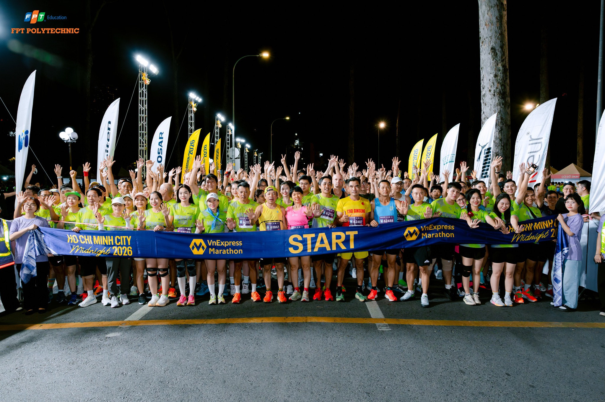

1.Hơn 300 vận động viên FPT Polytechnic tham gia VnExpress Marathon Ho Chi Minh City Midnight 2026

8:21 06/04/2026
Hơn 300 vận động viên là cán bộ, giảng viên và sinh viên Trường Cao đẳng FPT Polytechnic cơ sở TP HCM đã cùng góp mặt tại VnExpress Marathon Ho Chi Minh City Midnight 2026, tạo nên dấu ấn mạnh mẽ trong cộng đồng chạy bộ sinh viên. Sự kiện không chỉ là một giải đấu thể thao mà còn là hành trình khẳng định ý chí, sự bền bỉ và tinh thần không ngừng vượt qua giới hạn bản thân.
Tham gia giải chạy đêm giữa lòng thành phố, các vận động viên FPT Polytechnic đã cùng nhau chinh phục những cung đường rực rỡ ánh đèn.
Mỗi bước chạy không chỉ hướng đến đích đến cuối cùng mà còn thể hiện tinh thần quyết tâm, sự kiên trì và bản lĩnh của tuổi trẻ Poly.

Không khí của giải chạy trở nên đặc biệt hơn khi mỗi vận động viên không chỉ chạy cho riêng mình, mà còn mang theo tinh thần tập thể và niềm tự hào chung. Dù là những sinh viên trẻ hay các giảng viên, cán bộ, tất cả đều hòa chung một nhịp bước, cùng nhau lan tỏa năng lượng tích cực và tinh thần thể thao lành mạnh.
Bên cạnh những bước chân bền bỉ trên đường chạy, sự hiện diện của các cổ động viên cũng góp phần tạo nên một đêm thi đấu đáng nhớ. Những tiếng hò reo, những lời động viên và ánh nhìn tiếp sức đã trở thành nguồn năng lượng mạnh mẽ, giúp các vận động viên vượt qua giới hạn thể lực và tinh thần trong suốt hành trình.

Giải VnExpress Marathon Ho Chi Minh City Midnight 2026 không chỉ dừng lại ở ý nghĩa của một cuộc đua, mà còn là nơi kết nối cộng đồng, lan tỏa tinh thần sống khỏe và truyền cảm hứng tích cực đến đông đảo sinh viên. Đối với FPT Polytechnic TP.HCM, đây là cơ hội để khẳng định vai trò của nhà trường trong việc thúc đẩy phong trào thể thao học đường, đồng thời xây dựng một môi trường học tập năng động, toàn diện.